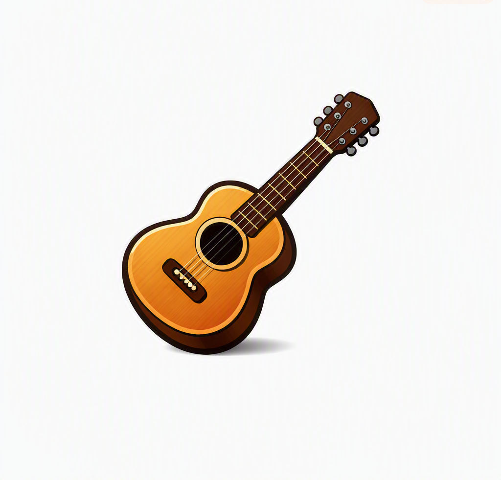
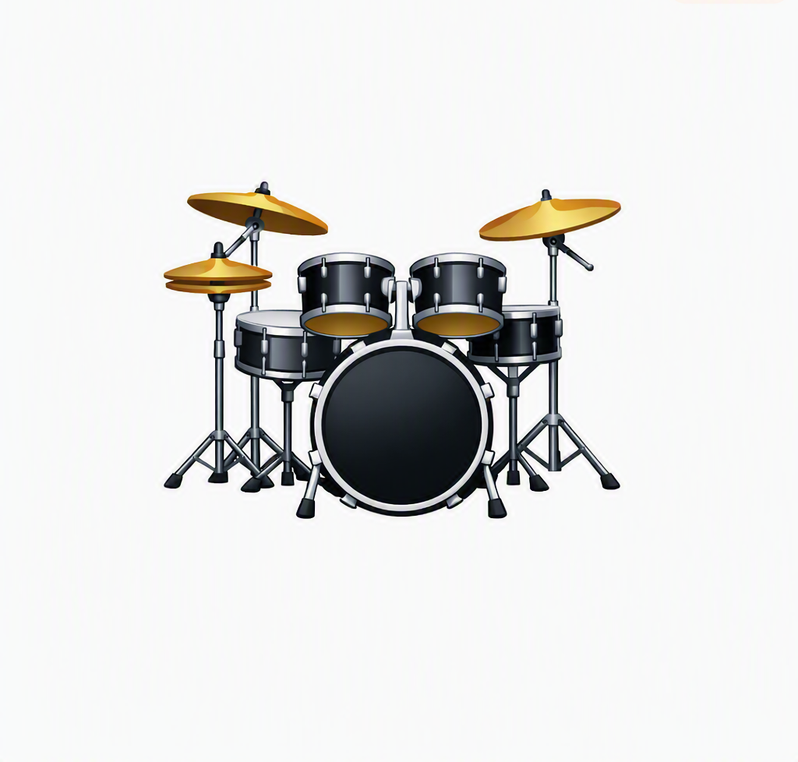
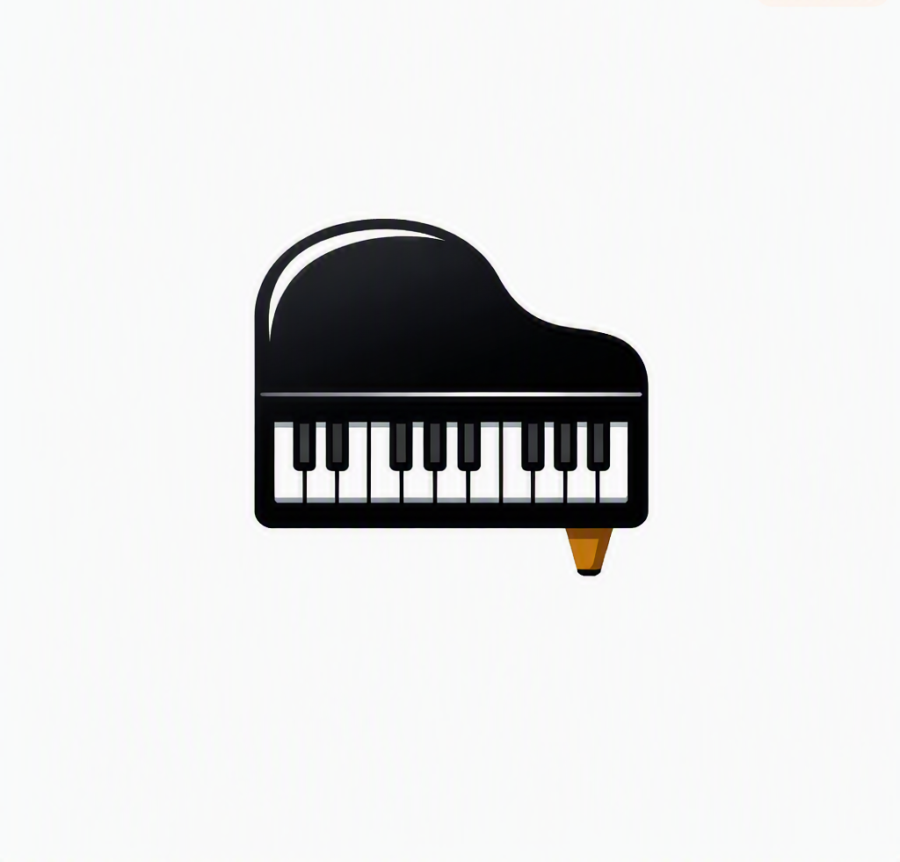

Music is an important form of human expression that has been part of
cultures around the world for thousands of years. It can communicate
emotions, preserve traditions, bring people together, and provide
entertainment and inspiration.
The guitar is a 6-string instrument commonly used in many genres of music.
It produces sound when its strings are plucked or strummed

The drum is a percussion instrument that produces sound when its surface
is struck with the hands or with drumsticks. Drums are commonly used to
provide rhythm in musical performances.

The piano is a keyboard instrument that produces sound when its keys
activate small hammers that strike strings. It is widely used in both
classical and popular music.
